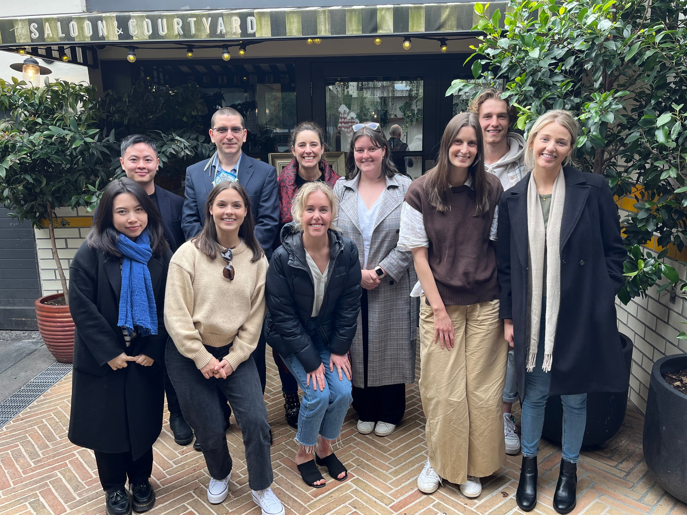
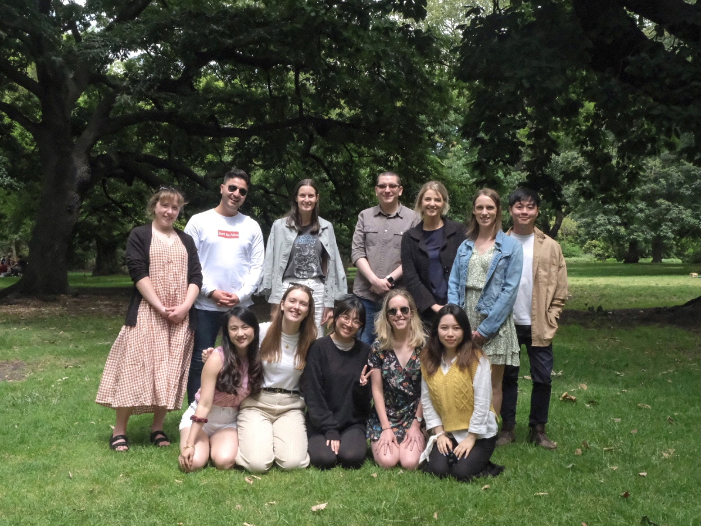
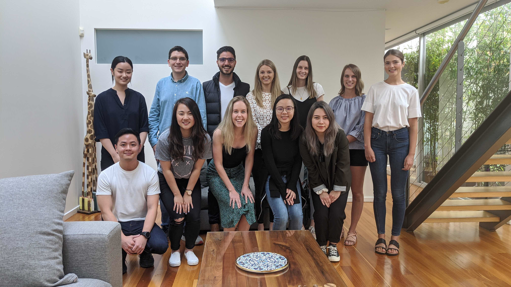
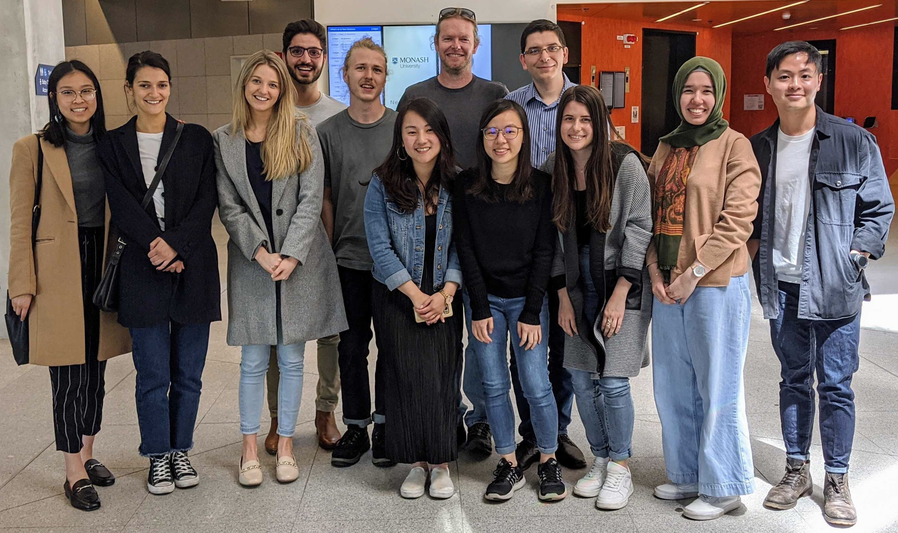

Team

Victoria Dax | 2020 - current | PhD (Clinical)
Tory completed her Bachelor of Arts (with Honours) in Psychology at Monash University in 2018. In 2019 Tory worked at Peter MacCallum Cancer Centre across multiple experience of care projects including the ‘Fear-Less’ project, a stepped-care intervention to help manage fear of cancer recurrence in people with metastatic melanoma and presented some of these results in a poster presentation at the 2019 VCCC Psycho-oncology Conference. Tory commenced her PhD (Clinical Psychology) in 2020 and under supervisors Dr. Joshua Wiley and Dr. Maria Ftanou (Peter MacCallum Cancer Centre). Her research explores understanding the psychological sequelae of germ cell testicular cancer.
Phuong (Flora) Le | 2021 - current | PhD
Flora Le completed her Bachelor of Arts (with Honours) in Psychology at Monash University in 2020. Her Honours project used a novel compositional data analysis approach to investigate the associations between daily activities and affect. Flora commenced her PhD in 2021 and is under the supervision of Dr Joshua Wiley, Dr Dot Dummuid (University of South Australia) and Dr Yue Liao (University of Texas at Arlington).
Her current research seeks to identify the healthiest way to spend time across daily activities such as sleep and physical activity. Because our day is limited to 24 hours, her work involves developing novel analytical models that explore the effects of balancing activities on daily psychological experiences (e.g., stress and affect) and mental health (e.g., depression and anxiety). She also works as a research assistant across the theme of sleep health, including interventions for better sleep.
David Tuck | 2019 - current | PhD
David completed his Bachelor of Behavioural Studies (clinical psychology) with a co-minor in advanced psychology at Swinburne University in 2014. Since then he has combined his personal and professional interests by volunteering as a snowboarding guide with Disabled Wintersports Australia, and an assistant music therapist at Frankston Young Veterans and Families Wellbeing Centre. David completed the Graduate Diploma of Psychology Advanced at Monash University in 2017 whilst working concurrently as a research assistant with Dr Joshua Wiley. David’s research interests lay in preventative mental health and interdisciplinary investigations. His Graduate Diploma thesis investigated the relationship between posttraumatic growth and emotional intelligence. David began his PhD at Monash in 2019, investigating the factors that promote resilience to potentially traumatic events. His research supervisors are Dr Emily Berger, Dr Joshua Wiley, and Dr Lefteris Patlmazaglou.
Group Photo - 2022
Group Photo - 2021

Group Photo - 2020

Group Photo - 2019
